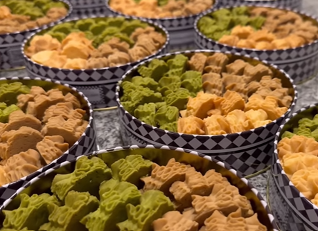

Ingredients
- 1 cup unsalted butter, softened
- 1 cup granulated sugar
- 1 cup brown sugar, packed
- 2 large eggs
- 1 teaspoon vanilla extract
- 3 cups all-purpose flour
- 1 teaspoon baking soda
- 1/2 teaspoon salt
- 2 cups chocolate chips (or your favorite mix-ins)
Instructions
- Preheat your oven to 350°F (175°C).
- In a large bowl, cream together the softened butter, granulated sugar, and brown sugar until smooth.
- Add the eggs one at a time, mixing well after each addition, then stir in the vanilla extract.
- In another bowl, combine the flour, baking soda, and salt. Gradually add this dry mixture to the wet mixture, mixing until just combined.
- Fold in the chocolate chips (or your choice of mix-ins).
- Drop rounded tablespoons of dough onto ungreased baking sheets, spacing them about 2 inches apart.
- Bake for 10-12 minutes, or until the edges are golden brown.
- Allow cookies to cool on the baking sheets for a few minutes before transferring them to wire racks to cool completely.
Enjoy!
Your delicious Jenny Cookies are ready to be enjoyed! Serve them fresh or store them in an airtight container.